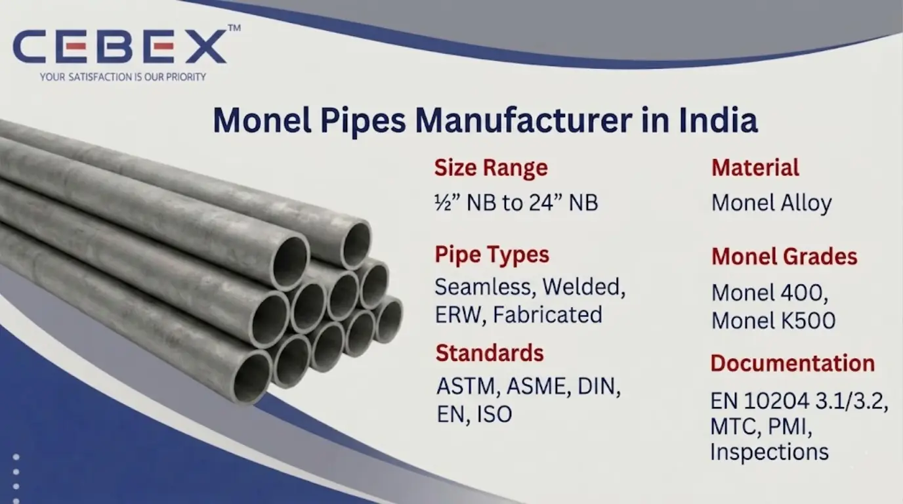

Leading Manufacturer & Exporter of ASTM B165 Monel 400 & Monel K500 Pipes
In industries where exceptional corrosion resistance, high mechanical strength, and long-term reliability are critical, Monel Pipes are widely used for demanding industrial applications exposed to aggressive environments and seawater conditions. As a leading Monel Pipe Manufacturer in India, CEBEX STEEL INDIA manufactures and supplies premium-quality Monel seamless pipes and welded pipes in accordance with international ASTM, ASME, DIN, EN, and ISO standards for industrial, marine, and offshore applications.
Our Monel Pipes are extensively used in chemical processing plants, marine engineering, offshore platforms, oil & gas industries, power plants, heat exchangers, condensers, desalination facilities, and industrial piping systems because of their outstanding resistance to seawater corrosion, acids, alkalis, and high-temperature operating conditions. We manufacture ASTM B165 Monel Pipes in Monel 400 and Monel K500 grades to meet the requirements of EPC contractors, engineering companies, fabrication industries, and industrial buyers worldwide.
At CEBEX STEEL INDIA, we utilize advanced pipe manufacturing, cold drawing, welding, heat treatment, and finishing technologies to manufacture Monel Pipes with superior dimensional accuracy, smooth surface finish, and consistent metallurgical properties. Our products are trusted by clients across India, Africa, the Middle East, Europe, and Southeast Asia for critical industrial and export projects.

Selecting the right Monel Pipe Manufacturer is essential for ensuring corrosion resistance, piping reliability, and long operational service life in harsh industrial environments. CEBEX STEEL INDIA has established itself as a trusted Monel Pipe Manufacturer in India through strong technical expertise, stringent quality systems, and dependable export capabilities.
We maintain complete traceability from raw material procurement to finished pipe dispatch and provide all products with EN 10204 3.1/3.2 Mill Test Certificates, inspection reports, and export documentation. Our in-house quality department performs chemical analysis, tensile testing, hardness testing, PMI testing, hydro testing, ultrasonic testing, and dimensional inspection to ensure compliance with ASTM specifications and project requirements.
Our export logistics team efficiently manages seaworthy packaging, export documentation, and worldwide shipping for smooth international deliveries.
Our Monel Pipes are manufactured using premium-quality nickel-copper alloys sourced from approved mills and processed using advanced production technologies to ensure superior corrosion resistance and mechanical performance in marine and industrial environments.
The following table summarizes the technical specifications of our Monel Pipes:
| Feature | Specification / Detail |
|---|---|
| Standards | ASTM, ASME, DIN, EN, ISO |
| ASTM Specifications | ASTM B165, ASTM B725, ASTM B730 |
| Monel Grades | Monel 400, Monel K500 |
| UNS Grades | N04400, N05500 |
| Pipe Types | Seamless, Welded, ERW, Fabricated |
| Size Range | –" NB to 24" NB |
| Wall Thickness | SCH 5 to SCH XXS |
| Surface Finish | Annealed, Pickled, Polished |
| Manufacturing Method | Cold Drawn, Hot Rolled, Welded |
| Documentation | EN 10204 3.1/3.2, MTC, PMI Reports, Inspection Reports |
Our product range includes a comprehensive selection of Monel Pipes suitable for marine, offshore, chemical processing, and industrial piping applications. We manufacture Monel seamless pipes for high-pressure service conditions, welded Monel pipes for industrial process piping, ERW Monel pipes for structural applications, and fabricated Monel pipes for customized engineering requirements.
We also manufacture Monel capillary pipes, heat exchanger pipes, condenser pipes, instrumentation pipes, polished pipes, annealed pipes, and custom-cut Monel pipes according to project specifications and client drawings.
Material selection plays a critical role in applications exposed to seawater corrosion, acidic chemicals, and elevated temperatures. We manufacture Monel Pipes in internationally approved grades suitable for highly demanding industrial environments.
The following table summarizes our commonly manufactured Monel Pipe grades:
| Monel Grade | UNS Number | Typical Applications | Standards |
|---|---|---|---|
| Monel 400 | N04400 | Marine, Chemical, Heat Exchangers | ASTM B165 |
| Monel K500 | N05500 | Offshore, Pumps, Shafts, Marine Engineering | ASTM B163 / ASTM B165 |
All Monel materials are sourced from reputed mills and supplied with complete traceability and inspection documentation.
Every Monel Pipe manufactured by CEBEX STEEL INDIA includes complete chemical composition and mechanical property reports to ensure compliance with international standards and industrial project requirements.
| Element | Composition (%) |
|---|---|
| Nickel (Ni) | 63.0 Min |
| Copper (Cu) | 28.0 – 34.0 |
| Iron (Fe) | 2.5 Max |
| Manganese (Mn) | 2.0 Max |
| Carbon (C) | 0.3 Max |
| Silicon (Si) | 0.5 Max |
| Property | Value |
|---|---|
| Tensile Strength | 550 MPa Min |
| Yield Strength | 240 MPa Min |
| Elongation | 35% Min |
| Hardness | 65–85 HRB |
| Element | Composition (%) |
|---|---|
| Nickel (Ni) | 63.0 Min |
| Copper (Cu) | 27.0 – 33.0 |
| Aluminium (Al) | 2.3 – 3.15 |
| Titanium (Ti) | 0.35 – 0.85 |
| Iron (Fe) | 2.0 Max |
| Property | Value |
|---|---|
| Tensile Strength | 965 MPa Min |
| Yield Strength | 690 MPa Min |
| Elongation | 20% Min |
Our quality department conducts spectrographic analysis, tensile testing, hardness testing, ultrasonic inspection, PMI testing, hydro testing, and dimensional verification using calibrated inspection equipment.
We manufacture Monel Pipes in sizes ranging from –" NB to 24" NB with wall thicknesses from SCH 5 to SCH XXS according to ASTM and ASME standards. Standard pipe lengths include single random, double random, and custom-cut lengths as per customer requirements.
The following table illustrates approximate Monel Pipe dimensions:
| Pipe Size | Outside Diameter | Wall Thickness |
|---|---|---|
| –" NB | 21.3 mm | 2.77 mm |
| 1" NB | 33.4 mm | 3.38 mm |
| 2" NB | 60.3 mm | 3.91 mm |
| 4" NB | 114.3 mm | 6.02 mm |
| 8" NB | 219.1 mm | 8.18 mm |
Additional services including pipe polishing, beveling, threading, cutting, fabrication, and custom finishing are available according to customer specifications.
Our Monel Pipes are extensively used in industries requiring exceptional corrosion resistance and high mechanical performance under aggressive service conditions. Marine and offshore industries utilize Monel Pipes for seawater piping systems, offshore structures, pumps, valves, and marine engineering applications because of their superior seawater corrosion resistance.
Chemical processing industries use Monel Pipes for handling acidic and alkaline chemicals in reactors, pressure vessels, and industrial piping systems. Oil & gas industries utilize Monel Pipes in offshore platforms, subsea equipment, and refinery piping systems where corrosion resistance and operational reliability are essential.
Our Monel Pipes are also widely used in power plants, desalination plants, condensers, heat exchangers, petrochemical industries, and defense engineering applications.
Quality assurance is one of the core strengths of our manufacturing, supply, and export operations. Every Monel Pipe undergoes strict inspection and testing procedures including dimensional inspection, chemical analysis, tensile testing, hardness testing, PMI testing, hydrostatic testing, ultrasonic testing, and visual inspection.
Our quality control department utilizes advanced inspection equipment including spectrometers, ultrasonic flaw detectors, hardness testing machines, hydro testing systems, and dimensional measurement instruments to ensure compliance with ASTM, ASME, DIN, and customer project requirements.
We understand the importance of safe packaging and timely deliveries for industrial and export projects. Our Monel Pipes are packed using export-grade wooden boxes, seaworthy wooden pallets, waterproof wrapping materials, and protective bundled packaging to ensure complete protection during international transportation.
Our export logistics department manages complete shipping documentation including commercial invoices, packing lists, certificates of origin, mill test certificates, and inspection reports for smooth customs clearance and worldwide delivery.
As a leading Monel Pipe Manufacturer in India, we have built a strong reputation for supplying high-quality pipes to major projects across Africa. Our export team understands the unique requirements of African industries and ensures smooth, timely deliveries with complete documentation and compliance. From oil and gas to power and infrastructure, our pipes are trusted by clients in Nigeria, Egypt, Kenya, South Africa, Ethiopia and beyond. To learn more about our specialized solutions for the continent, visit our Africa Monel Pipe Exporter page.
In addition to Monel Pipes, we also manufacture and export Inconel Pipes , Hastelloy Pipes , Duplex Steel Pipes , Super Duplex Pipes , Stainless Steel Pipes , and Titanium Pipes . These high-performance alloy pipes are engineered for demanding industrial applications requiring superior corrosion resistance, exceptional mechanical strength, elevated-temperature performance, and long-term operational reliability.
Our technical team is available to help you select the perfect grade and specification for your project.
Browse our full range:
Clients choose CEBEX STEEL INDIA because of our strong technical expertise, strict quality control systems, competitive export pricing, and dependable worldwide delivery capabilities. We provide flexible order quantities, custom pipe fabrication services, fast production schedules, and responsive customer support for industrial and EPC projects.
Our engineering team assists clients in selecting the appropriate Monel grades and pipe specifications based on operating conditions, corrosion exposure, temperature requirements, and mechanical performance needs.
Our Monel Pipes comply with ASTM B165, ASTM B725, ASME, DIN, EN, and ISO standards with complete certification and traceability.
We manufacture Monel 400 and Monel K500 Pipes in seamless and welded forms.
Yes, every shipment includes EN 10204 3.1/3.2 Mill Test Certificates along with inspection and testing reports.
We manufacture Monel Pipes from –" NB to 24" NB with custom cut lengths and wall thicknesses available.
Yes, we provide pipe cutting, polishing, beveling, threading, fabrication, and custom finishing services according to customer specifications.